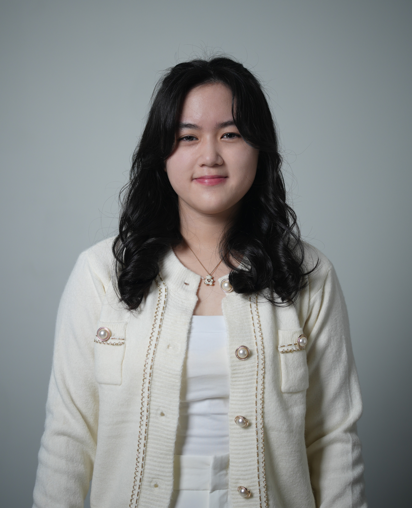

Third-year student at Universitas Ciputra, bridging the gap between technical architecture and executive strategy, transforming complex Machine Learning models into actionable KPI dashboards and raw data into a competitive business advantage.

From engineering high accuracy machine learning pipelines to architecting scalable system models, integrating technical rigor with data driven business strategy.
Designing scalable back-end infrastructures with PHP/Laravel, utilizing the MVC pattern to ensure secure, enterprise grade application logic.
Deploying robust management systems with C# (.NET), focusing on secure transaction logging and inventory modules for operational modernization.
Architecting normalized relational database schemas and writing optimized SQL queries for high-integrity, real-time data operations.
Enforcing industry best practices and clean code principles through rigorous technical code reviews and mentoring 80+ students in system design.
Achieved 91% accuracy using a Hybrid ML approach (SVM + Lexicon) to categorize public discourse on Indonesian energy policy.
Engineering end-to-end ML workflows: from complex data wrangling and feature engineering to predictive model training and evaluation using CRISP-DM standards.
Rigorous quantitative research with JASP — reliability testing, multiple regression, mediation analysis, and time-series analysis for 100+ respondent datasets.
Tokenization, stemming, stopword removal, TF-IDF feature extraction, and sentiment lexicon integration for Bahasa Indonesia text data.
As a Teaching Assistant, guided 43+ students through the complexities of the data science lifecycle. Evaluated student competencies in translating statistical findings into actionable business stories and executive-level insights.
Structured methodology for translating stakeholder pain points into technical architectures using UML specifications and high fidelity Figma prototyping.
Proven ability to optimize organizational finance and administrative operations through data driven budget planning for large-scale events.
Transforming raw datasets into interactive Tableau dashboards to track Key Performance Indicators (KPIs) and identify operational trends for executive level decision making.
5× national podium winner in business case and plan competitions, demonstrated excellence in diagnosing complex problems and pitching data driven strategic solutions.
Each project was built to solve a real problem, from automating service booking workflows to extracting policy relevant insight from social media text.
Architected and deployed a full stack Laravel system to automate complex service booking workflows. Designed a normalized relational database and implemented MVC architecture to ensure high application scalability. Engineered secure role-based access control (RBAC) to manage real-time scheduling and financial tracking.
Performed a comprehensive System Analysis & Design (SAD) engagement to modernize operational workflows for a local enterprise. Translated stakeholder requirements into high fidelity Figma prototypes and technical UML documentation before implementing a C# desktop solution for inventory and transaction management.
Transformed complex, multi dimensional business datasets into interactive Tableau visual reports to identify critical operational trends. Cleaned and modeled raw data to track Key Performance Indicators (KPIs), enabling data driven strategic planning and fiscal oversight.
Faculty collaborative research at the intersection of machine learning, policy analysis, and organizational behavior.
Serving as a Teaching Assistant across four courses at Universitas Ciputra. Guiding students from first principles to industry ready skills in web development, data science, and systems design.
Students guided across Web Dev, Data Science, SAD, and Application Development.
Progressive leadership from Research & Development to Secretary General, specializing in data driven fiscal planning, cross functional team orchestration, and the analytical auditing of 20+ organizational initiatives.
Events managed and coordinated across all organizational roles.
Continuous upskilling through courses.
Data wrangling, Exploratory Data Analysis (EDA), and regression model development.
Interactive dashboards with Matplotlib, Seaborn, and Plotly for clear insight communication.
Python programming foundations, data structures, and Pandas/NumPy for data processing.
Practical training in data analysis workflows, business intelligence concepts, and analytical problem-solving.
Professional development in software fundamentals and app ecosystem at the Apple Developer Academy @ UC.
Rigorous foundation in statistical inference, probability, and data analysis authorized by Stanford University.
A Ministry of Education grant, a full academic scholarship, and five national competition podiums, a consistent excellence across technical and strategic domains.
Universitas Ciputra Surabaya
PKM 2025 — Ministry of Education and Culture, Republic of Indonesia
Held by Telkom University
Held by Syiah Kuala University
Held by Syiah Kuala University
Held by Trunojoyo University
Held by Jember University
GPA: 3.98 / 4.00
Relevant coursework: System Analysis & Design (SAD), Statistics, Data Warehouse, Data Science, Business Intelligence.
Academic Achievement Scholarship recipient (Invitation Path).
Mathematics and Natural Sciences track, building a strong analytical and logical foundation that directly supports advanced problem-solving in Information Systems and Data Science.
Bridging the gap between technical rigor and executive level strategy. If you're looking for an analytical mind to transform raw data into a competitive business advantage, let’s connect!